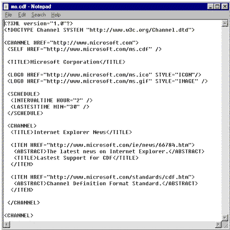
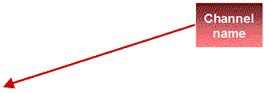
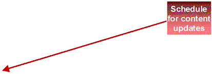
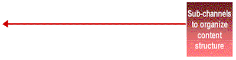
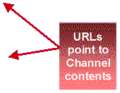

Timer-Driven Animation Sequence
Implementation
- Set absolute position of objects.
- Specify top, left, and width attributes.
- Initially set object's visibility="hidden".
- Set up a timer using setInterval().
To Animate
- Fly objects into the page using CSS positioning.
- Apply transitions to objects.




